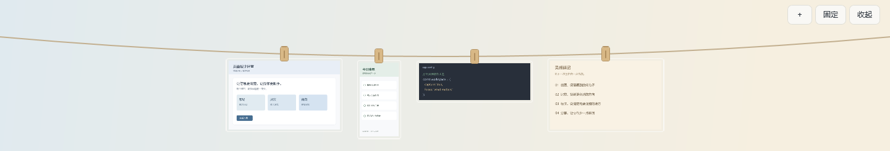

F1截图
先把想法截下来。
框选、标注、完成。Enter 复制并收进晾衣绳；也可以继续使用 Win+Shift+S 自动收集图片。
分辨率网络出品 · WINDOWS 桌面工具
用一根晾衣绳，收好最近的截图。
随手复制、圈出重点，或贴在桌面慢慢看。

拖动标题栏移动图片窗口，点任务栏上的图片图标打开或隐藏窗口。右下角 Snapline 图标可展开或收起晾衣绳。

启用 JavaScript 后可试用网页演示。
不用在文件夹里来回找，也不用打断正在做的事。
移到屏幕顶部，或按 Ctrl+Alt+T 展开。单击复制，双击预览，滚轮浏览最近截图。
放大、旋转、标注，在同一个窗口里完成。保存更新应用副本，导入的原图继续保留。
在截图或图片预览中点击「提取文字」，在原图上拖选中英文，再按 Ctrl+C 复制。
文字识别版使用本地模型，离线完成识别。Snapline 不采集用户个人信息，不上传或回传截图和识别结果。
F3 将剪贴板图片、文字或颜色贴到屏幕。拖动移动，滚轮缩放，Ctrl+滚轮调节透明度。
贴图仅在本次运行期间保留，长期保存请另存 PNG。
框选、标注、完成。Enter 复制并收进晾衣绳；也可以继续使用 Win+Shift+S 自动收集图片。
将剪贴板内容贴到桌面，对照设计、查看资料。按 Shift+F3，一起隐藏或显示贴图。
展开晾衣绳，单击复制后粘贴；也能把图片拖到支持文件拖放的应用或文件夹里。
以上为默认快捷键。截图与贴图快捷键可在托盘修改，避免与其他工具冲突。
一个桌面小工具，
也该照顾好这些小事。
顶部悬停唤出，也可以固定展开。全屏使用其他应用时，不会自动弹出晾衣绳。
日常使用可离线，无需账号。手动检查更新时会连接 GitHub。剪贴板收集仅读取图片，剪贴板与文件夹收集可分别关闭。
导入图片后，标注与移除针对应用副本操作。需要永久保存时，随时另存为 PNG。
开始之前，把几个小问题说清楚。
支持 Windows 10 / 11 x64，需要 .NET Framework 4.8 或更高版本。提供安装包和免安装版；安装包无需管理员权限，免安装版解压后运行 Snapline.exe 即可。
Snapline 客户端不采集用户个人信息或使用统计。截图、剪贴板内容和识别结果均在本机处理，不会上传或回传。手动检查更新时，软件只向 GitHub 查询公开版本，并在你确认后获取更新。
图片副本与设置保存在 %LOCALAPPDATA%\Snapline，也可从托盘打开收集文件夹。晾衣绳显示最近 60 张，较旧副本仍留在 inbox 文件夹中，不会自动清理。
自动收集只读取之后发生变化的图片，不读取文字或剪贴板历史。仅当你主动使用“贴到屏幕”时，才会读取当前剪贴板中的图片、文字或颜色。
贴图只在当前运行期间保留，退出后不会恢复。需要长期保留，请在贴图中按 Ctrl+S 另存 PNG。晾衣绳里已保存的图片副本会留在本机。
当前程序与安装包尚未进行代码签名，Windows 可能显示未知发布者或 SmartScreen 提示。请只从本页链接指向的 GitHub Release 下载，并核对该版本附带的 SHA-256 校验文件。
本页演示开发版的部分功能。下载前可查看对应版本说明，开发版也可从源码构建。
右键 Snapline 的托盘图标，可查看当前运行版本。
截图晾衣绳 Snapline，分辨率网络出品。